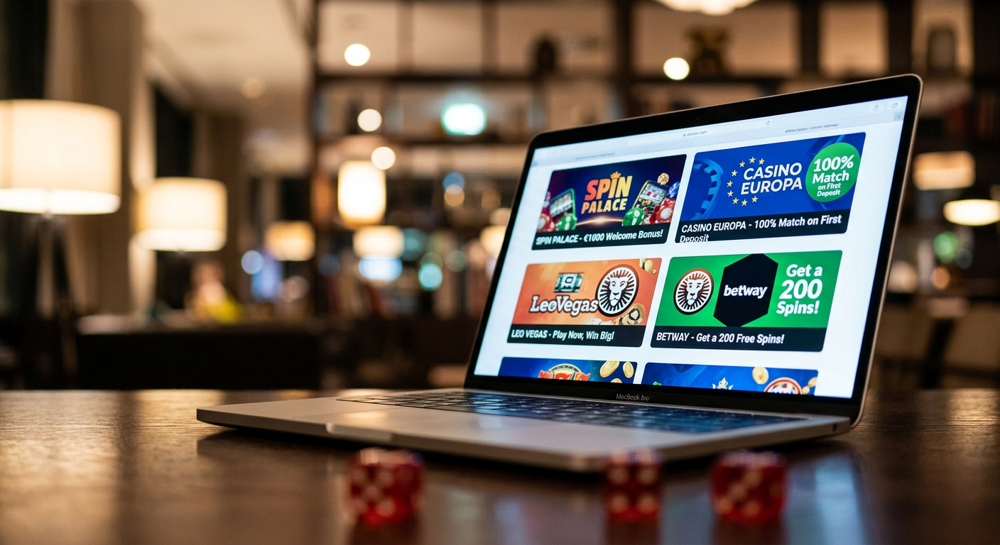
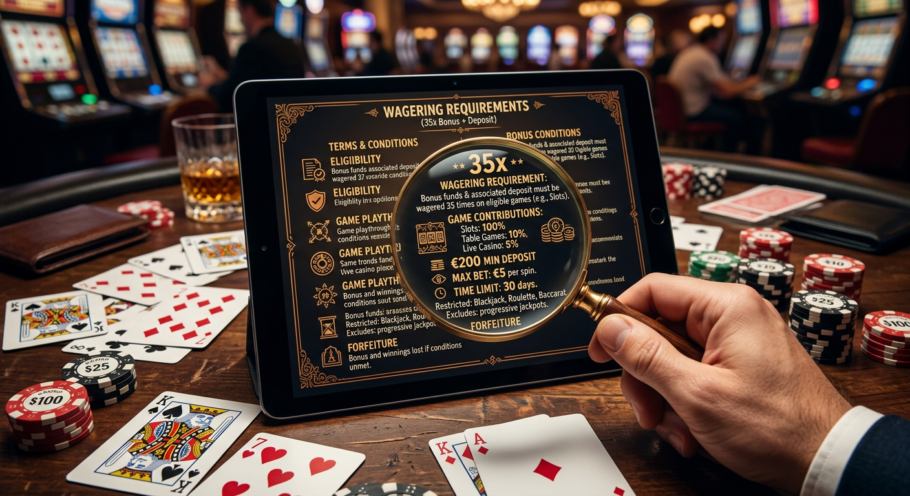
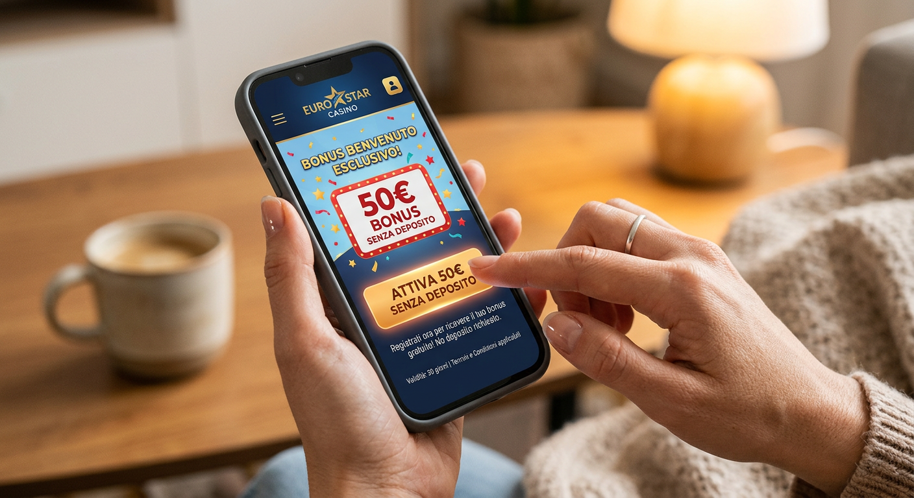
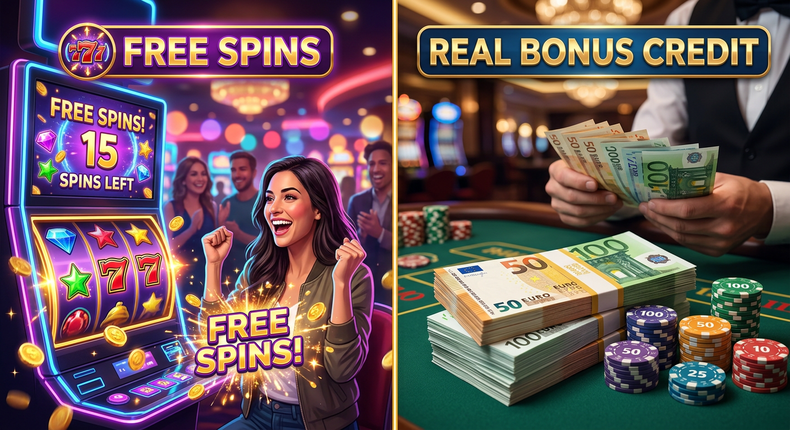

50 euro bonus senza deposito non aams
Il panorama del gioco d'azzardo digitale nel 2026 ha raggiunto vette di innovazione tecnologica e generosità promozionale mai viste prima. Per i giocatori italiani che cercano alternative alle restrizioni nazionali, il 50 euro bonus senza deposito non aams rappresenta l'apice dell'offerta di benvenuto. Questa guida esplora in dettaglio come navigare tra i migliori casinò internazionali, analizzando le opportunità offerte da operatori che operano al di fuori del circuito ADM, garantendo al contempo sicurezza e divertimento di alto livello.
Esplorare il mondo dei casinò esteri significa accedere a cataloghi di giochi vastissimi, con migliaia di slot machine, tavoli live con croupier reali e scommesse sportive integrate. La particolarità del 50 euro bonus senza deposito non aams risiede nella sua capacità di offrire un capitale di partenza reale senza che l'utente debba impegnare i propri fondi personali, permettendo una prova esaustiva della piattaforma prescelta nel contesto dinamico del 2026.
In questo articolo, analizzeremo non solo dove trovare queste offerte, ma anche come interpretare i termini e le condizioni che le accompagnano. Dalla comprensione dei requisiti di puntata alla scelta dei metodi di pagamento più rapidi come le criptovalute e gli e-wallet, questa risorsa è pensata per rendere l'esperienza di gioco consapevole, gratificante e, soprattutto, sicura.
Cosa si intende per 50 euro bonus senza deposito non AAMS?
Entrando nel merito tecnico, il 50 euro bonus senza deposito non aams è una promozione offerta da piattaforme di gioco online che possiedono licenze internazionali, come quelle rilasciate dalle autorità di Curacao, Malta o Gibilterra. A differenza degli operatori locali, questi siti possono permettersi strutture di costo diverse, il che si traduce spesso in promozioni più sostanziose per l'utente finale. Nel 2026, la concorrenza tra i brand internazionali ha spinto il valore medio delle offerte verso l'alto, rendendo i 50 euro una cifra standard per attirare nuovi talenti del gioco.
Il termine "senza deposito" indica che il credito viene accreditato sul conto di gioco immediatamente dopo la registrazione e la verifica (ove richiesta) del profilo. Questo tipo di bonus permette di testare le meccaniche di gioco, la velocità del software e la qualità dell'assistenza clienti senza alcun rischio finanziario. È fondamentale sottolineare che, sebbene si tratti di "denaro gratuito" per giocare, il 50 euro bonus senza deposito non aams è soggetto a specifiche regole di conversione in saldo reale prelevabile.
Infine, la dicitura "non AAMS" (o non ADM) specifica che l'operatore non è soggetto alla regolamentazione diretta dell'Agenzia delle Dogane e dei Monopoli italiana. Questo non implica illegalità, bensì l'adesione a standard internazionali differenti che spesso permettono una maggiore flessibilità nei limiti di puntata, nella varietà dei giochi disponibili e, come vedremo, nella velocità delle procedure di verifica tramite sistemi come il casino senza documenti.
Classifica dei Migliori Casinò Esteri con Credito Gratuito

Per aiutarvi a scegliere la piattaforma più adatta alle vostre esigenze nel 2026, abbiamo selezionato i brand che si distinguono per affidabilità, ampiezza dell'offerta e trasparenza delle condizioni. Ogni operatore elencato è stato testato per garantire che il 50 euro bonus senza deposito non aams venga erogato correttamente e che i processi di prelievo siano efficienti.
| Casinò Online | Bonus Senza Deposito | Requisiti di Puntata | Punto di Forza |
|---|---|---|---|
| BetAlice | 50 Euro | 35x | Slot Progressive di ultima generazione |
| Ninlay Casino | 50 Euro | 40x | Interfaccia Live Immersiva |
| RichRoyal | 50 Euro | 30x | Programma VIP Esclusivo |
| Boomerang | 50 Euro + FS | 35x | Cashback settimanale elevato |
| Pistolo | 50 Euro | 25x | Velocità di pagamento estrema |
| Betlabel | 50 Euro | 40x | Scommesse sportive integrate |
Questa selezione riflette l'eccellenza del mercato internazionale nel 2026. Brand come Boomerang e Pistolo hanno rivoluzionato l'approccio all'utente, riducendo la burocrazia e aumentando il valore intrinseco di ogni promozione. Scegliere uno di questi operatori significa affidarsi a società con anni di esperienza nel settore globale del gambling.
BetAlice: Bonus Immediato e Slot Innovative
BetAlice si è confermato nel 2026 come uno dei leader per chi cerca un'esperienza di gioco moderna. Il loro 50 euro bonus senza deposito non aams viene attivato istantaneamente dopo la conferma dell'e-mail. La piattaforma si distingue per una libreria di oltre 8.000 titoli, con una sezione dedicata alle slot "Buy Bonus" e ai giochi basati su blockchain che garantiscono l'equità tramite algoritmi Provably Fair.
L'interfaccia utente di BetAlice è ottimizzata per l'uso di visori VR, portando l'immersione a un livello superiore. Utilizzare il bonus su questa piattaforma permette di scoprire titoli esclusivi prodotti dai migliori provider mondiali, come NetEnt e Pragmatic Play, che collaborano strettamente con questo operatore per lanciare anteprime mondiali.
Ninlay Casino: Ampia Selezione di Giochi Live
Per gli amanti dell'atmosfera dei casinò fisici, Ninlay Casino offre una sezione live che non ha eguali. Il 50 euro bonus senza deposito non aams può essere spesso utilizzato (previa consultazione dei termini) anche su tavoli di Roulette e Blackjack gestiti da dealer professionisti. La tecnologia di streaming in 4K utilizzata da Ninlay garantisce un'esperienza fluida anche su connessioni mobili nel 2026.
Oltre al bonus iniziale, Ninlay propone tornei quotidiani dove i giocatori possono competere per montepremi aggiuntivi. La trasparenza nei pagamenti e la varietà di tavoli con limiti differenti rendono questo casinò una scelta primaria per chi desidera un ambiente di gioco professionale e dinamico.
RichRoyal: Eccellenza nelle Promozioni Settimanali
RichRoyal punta tutto sulla fidelizzazione dell'utente. Dopo aver usufruito del 50 euro bonus senza deposito non aams, i giocatori entrano in un ecosistema di premi ricorrenti. La piattaforma è nota per il suo "Bonus Calendar", che ogni giorno dell'anno 2026 offre una nuova opportunità, che si tratti di free spin senza deposito immediato senza documenti o di bonus ricarica personalizzati.
La cura del cliente è il pilastro di RichRoyal, con un supporto multilingue disponibile 24/7 tramite chat dal vivo e canali social criptati. La loro missione è fornire un ambiente lussuoso e sicuro, dove ogni scommessa è valorizzata da un sistema di punti fedeltà convertibili in denaro reale o premi tecnologici.
Vantaggi di scegliere operatori senza licenza ADM

Perché un giocatore italiano nel 2026 dovrebbe preferire un casinò internazionale? I motivi sono molteplici e riguardano principalmente la libertà operativa e la qualità delle offerte. I siti che offrono il 50 euro bonus senza deposito non aams operano in giurisdizioni che permettono una maggiore flessibilità. Questo si traduce, ad esempio, nell'assenza di limiti rigidi sulle puntate massime e nella possibilità di giocare a titoli che non sono ancora stati approvati dalle autorità locali.
Un altro vantaggio significativo riguarda la privacy. Molti di questi operatori permettono l'accesso alle offerte casino non aams senza richiedere lunghe procedure di invio documenti nelle fasi iniziali. Questo approccio "no-KYC" (Know Your Customer) o "light-KYC" è molto apprezzato da chi desidera mantenere la propria attività di gioco riservata e rapida. Inoltre, l'integrazione nativa delle criptovalute permette transazioni quasi istantanee e prive di commissioni bancarie tradizionali.
Infine, la varietà di giochi è un fattore determinante. I casinò non AAMS collaborano con una gamma più ampia di sviluppatori software globali. Questo significa che oltre alle classiche slot, gli utenti possono accedere a giochi arcade, scommesse su eSports, mercati finanziari simulati e giochi televisivi interattivi, tutti accessibili tramite il medesimo 50 euro bonus senza deposito non aams.
Requisiti di puntata del 50 euro bonus senza deposito non AAMS

Comprendere i requisiti di puntata è essenziale per chiunque voglia trasformare il bonus in denaro prelevabile. Nel gergo dei casinò online del 2026, questo concetto viene spesso definito rollover o playthrough. In sostanza, indica quante volte il valore del bonus ricevuto deve essere scommesso prima che le vincite da esso derivate possano essere riscosse. Per un 50 euro bonus senza deposito non aams, un requisito comune oscilla tra il 30x e il 45x.
È importante leggere attentamente la contribuzione dei singoli giochi al raggiungimento di questi requisiti. Solitamente, le slot machine contribuiscono al 100%, il che significa che ogni euro scommesso scala esattamente un euro dal totale del rollover. Al contrario, giochi come il blackjack o la roulette potrebbero contribuire solo per il 5% o il 10%, rendendo più lungo il processo di sblocco della somma.
Un operatore onesto indicherà chiaramente queste condizioni. Nel 2026, la trasparenza è diventata un fattore competitivo; pertanto, i casinò che nascondono clausole vessatorie tendono a scomparire rapidamente dal mercato. Monitorare il progresso del proprio bonus attraverso la dashboard dell'account è un'operazione semplice che permette di pianificare al meglio le proprie sessioni di gioco.
Il concetto di Rollover o Volume di Gioco
Il rollover è il meccanismo che protegge i casinò dall'abuso delle promozioni. Se un sito regalasse 50 euro senza alcuna condizione, fallirebbe in pochi giorni. Grazie ai requisiti di puntata, il casinò si assicura che l'utente provi effettivamente i giochi. Ad esempio, con un rollover di 35x su un 50 euro bonus senza deposito non aams, l'utente dovrà generare un volume di scommesse totale pari a 1.750 euro.
Non bisogna spaventarsi davanti a queste cifre. Grazie all'alto tasso di ritorno al giocatore (RTP) delle slot moderne del 2026, che spesso supera il 97%, è possibile completare il volume di gioco necessario mantenendo una buona parte del saldo. La chiave è la pazienza e la scelta dei titoli giusti, preferendo quelli a bassa o media volatilità per sessioni di gioco più lunghe e costanti.
Limiti di tempo e massimali di prelievo
Oltre al volume di gioco, il 50 euro bonus senza deposito non aams è quasi sempre accompagnato da una scadenza temporale. Nel 2026, la durata standard di validità di un bonus senza deposito varia dai 7 ai 30 giorni. Se i requisiti non vengono soddisfatti entro questo lasso di tempo, il bonus e le vincite accumulate verranno annullati. È dunque fondamentale attivare la promozione in un momento in cui si sa di poter dedicare del tempo al gioco.
Un altro aspetto da considerare è il "cap" sulle vincite, ovvero il limite massimo prelevabile derivante dal bonus gratuito. Spesso, per un 50 euro bonus senza deposito non aams, il limite di prelievo è fissato tra i 100 e i 500 euro. Sebbene possa sembrare una restrizione, si tratta pur sempre di un profitto netto ottenuto senza aver investito un solo centesimo di capitale proprio, un'opportunità eccezionale nel contesto economico del 2026.
Guida passo-passo: Come attivare l'offerta sul tuo conto

Attivare un 50 euro bonus senza deposito non aams è un processo studiato per essere il più fluido possibile, riducendo al minimo gli attriti tra l'utente e il divertimento. Nel 2026, la maggior parte dei casinò internazionali ha adottato sistemi di registrazione "one-click" o tramite profili social e portafogli crittografici, accelerando notevolmente le tempistiche.
- Scelta del Casinò: Seleziona uno dei brand consigliati nella nostra tabella, come Betlabel o RichRoyal, cliccando sul link ufficiale per garantirti l'accesso alla promozione esclusiva.
- Registrazione: Inserisci i dati richiesti. Spesso basta un'e-mail e una password. Ricorda che molti siti sono definiti slot senza documenti perché non richiedono l'invio immediato della carta d'identità.
- Inserimento Codice Bonus: Se richiesto, inserisci il codice promozionale (es. "FREE50-2026") durante la fase di iscrizione o nella sezione "Bonus" del tuo profilo.
- Verifica del Conto: Conferma il tuo indirizzo e-mail o il numero di telefono tramite il codice ricevuto via SMS. Questo passaggio è fondamentale per attivare il 50 euro bonus senza deposito non aams.
- Inizio del Gioco: Una volta accreditato il saldo, naviga nel catalogo giochi e seleziona i titoli che preferisci, controllando che siano validi per il soddisfacimento del rollover.
Seguendo questi semplici passaggi, sarai pronto a esplorare le potenzialità della piattaforma in pochi minuti. La tecnologia del 2026 assicura che ogni passaggio sia protetto da crittografia end-to-end, garantendo la massima sicurezza dei tuoi dati personali, anche in assenza di una licenza ADM diretta.
Differenze tra giri gratuiti e credito bonus reale

Nel mondo delle promozioni dei casinò, è comune imbattersi sia in offerte di credito (come il 50 euro bonus senza deposito non aams) che in giri gratuiti (o free spins). Sebbene entrambi offrano la possibilità di giocare gratuitamente, le meccaniche sottostanti sono differenti. Il credito bonus è estremamente versatile: puoi decidere tu quanto puntare per ogni singolo giro (rispettando i limiti massimi previsti) e spesso puoi spaziare tra diversi tipi di giochi.
I free spin senza deposito immediato senza documenti sono invece vincolati a una o più slot machine specifiche. Il valore di ogni giro è predeterminato dal casinò (solitamente tra 0,10€ e 0,20€). Le vincite ottenute dai giri gratuiti vengono poi trasformate in credito bonus, che a sua volta sarà soggetto a requisiti di puntata prima di diventare denaro reale. Scegliere un 50 euro bonus senza deposito non aams offre quindi una libertà di manovra superiore rispetto ai pacchetti di soli giri gratuiti.
Tuttavia, le migliori piattaforme del 2026, come Boomerang, spesso combinano le due offerte, regalando ad esempio un bonus slot senza invio documenti composto da 50 euro di credito e 50 giri gratuiti su una slot di punta. Questa combinazione permette all'utente di godere del meglio di entrambi i mondi, massimizzando le ore di intrattenimento e le chance di chiudere la sessione in attivo.
Consigli per massimizzare le probabilità di vincita
Giocare con un 50 euro bonus senza deposito non aams non è solo una questione di fortuna, ma anche di strategia. Per aumentare le probabilità di trasformare quel bonus in prelievo reale, è necessario adottare un approccio metodico. Il primo consiglio degli esperti per il 2026 è quello di selezionare giochi con un'alta percentuale di ritorno al giocatore (RTP). Più l'RTP è vicino al 100%, minori sono le perdite matematiche nel lungo periodo.
Un'altra tattica efficace è la gestione oculata della dimensione della puntata. Se disponi di un 50 euro bonus senza deposito non aams, effettuare puntate da 5 euro l'una potrebbe esaurire il tuo credito troppo velocemente. È preferibile optare per puntate più contenute, ad esempio tra 0,20€ e 0,50€, per permettere alla varianza del gioco di lavorare a tuo favore e darti il tempo di colpire una vincita significativa che possa sostenere il resto del rollover.
Inoltre, tieni sempre d'occhio i termini relativi alla "Max Bet". Quasi tutti i casinò che offrono il 50 euro bonus senza deposito non aams impongono un limite di scommessa massima (spesso 5 euro) mentre il bonus è attivo. Superare questo limite, anche solo per una giocata, può portare all'annullamento dell'intero bonus e delle vincite correlate. Leggere i termini e le condizioni non è un optional, ma un pilastro della strategia di ogni giocatore professionista.
Sicurezza e legalità nei casinò internazionali
Una delle domande più frequenti che i giocatori si pongono nel 2026 riguarda la sicurezza dei siti non AAMS. È importante chiarire che la mancanza di una licenza italiana non equivale a una mancanza di regolamentazione. Le piattaforme che offrono il 50 euro bonus senza deposito non aams sono spesso titolari di licenze prestigiose come quella della MGA (Malta Gaming Authority) o di Curacao eGaming, che impongono standard rigorosi in termini di protezione dei fondi, equità dei giochi e gioco responsabile.
La sicurezza tecnologica è un altro punto di forza. I moderni casinò internazionali utilizzano protocolli SSL a 256 bit e sistemi di autenticazione a due fattori (2FA) per proteggere gli account degli utenti. Inoltre, l'uso di generatori di numeri casuali (RNG) certificati da laboratori indipendenti come eCOGRA o iTech Labs assicura che ogni esito di gioco sia assolutamente imparziale e non manipolabile. Per approfondire l'evoluzione della regolamentazione globale, puoi consultare risorse autorevoli come la sezione dedicata al gioco d'azzardo online su Wikipedia.
Operare con un 50 euro bonus senza deposito non aams su siti recensiti e affidabili garantisce quindi una tutela paragonabile a quella degli operatori nazionali, con il vantaggio di un'offerta più dinamica. In un mondo sempre più interconnesso come quello del 2026, la reputazione online di un brand è il suo bene più prezioso, e i grandi operatori internazionali investono milioni di dollari ogni anno per mantenerla intatta.
Perché scegliere un casino senza documenti nel 2026?
La tendenza dominante del 2026 nel settore dell'iGaming è la semplificazione. Il concetto di bonus benvenuto senza documenti è diventato un criterio di scelta fondamentale per migliaia di utenti. La ragione è semplice: la velocità. In un'epoca dove tutto è istantaneo, attendere 48-72 ore per la verifica di un documento d'identità prima di poter giocare il proprio 50 euro bonus senza deposito non aams sembra anacronistico.
I casinò che operano senza richiedere documenti immediati utilizzano tecnologie avanzate di verifica basate sui dati delle transazioni o sull'identità digitale decentralizzata. Questo non solo accelera l'accesso al gioco, ma riduce drasticamente il rischio di furto d'identità, poiché meno dati sensibili vengono archiviati sui server centralizzati. Brand come Pistolo e Betlabel hanno fatto della velocità burocratica il loro marchio di fabbrica, attirando una clientela che apprezza l'efficienza e la modernità.
Inoltre, giocare in un casino senza documenti permette di testare diverse piattaforme con la massima agilità. Se un sito non soddisfa le tue aspettative dopo aver utilizzato il 50 euro bonus senza deposito non aams, puoi semplicemente chiudere la sessione e spostarti su un altro operatore senza aver lasciato tracce digitali profonde o aver condiviso scansioni di documenti personali.
Metodi di pagamento: Neteller, Skrill e Criptovalute
La gestione del denaro nel 2026 ha subito una trasformazione radicale. Sebbene il bonus iniziale non richieda un versamento, per incassare le vincite derivanti dal 50 euro bonus senza deposito non aams o per ricaricare successivamente il conto, è fondamentale disporre di metodi agili e sicuri. Gli e-wallet come Neteller e Skrill rimangono i preferiti per la loro capacità di separare il budget di gioco dal conto bancario principale, offrendo transazioni immediate.
Tuttavia, la vera rivoluzione è rappresentata dalle criptovalute. Bitcoin, Ethereum e stablecoin come USDT sono accettati universalmente dai casinò non AAMS. Questi strumenti offrono anonimato, commissioni quasi nulle e, cosa più importante, prelievi che vengono elaborati in pochi minuti anziché giorni. Nel contesto del 50 euro bonus senza deposito non aams, utilizzare le crypto per il primo deposito post-bonus può spesso sbloccare ulteriori vantaggi e promozioni dedicate.
È interessante notare come l'industria stia evolvendo verso l'adozione di pagamenti tramite Lightning Network e altre tecnologie di secondo livello, rendendo il trasferimento di valore fluido come l'invio di un messaggio istantaneo. Secondo un recente rapporto di Forbes sulla tecnologia finanziaria, l'integrazione tra gaming e crypto sarà il driver principale della crescita del settore nei prossimi anni.
FAQ sul 50 euro bonus senza deposito non AAMS
In questa sezione rispondiamo alle domande più comuni poste dai giocatori che si avvicinano per la prima volta al mondo dei casinò internazionali nel 2026. La chiarezza è fondamentale per approcciarsi al 50 euro bonus senza deposito non aams con la giusta mentalità.
È necessario inviare i documenti per il bonus?
Nella maggior parte dei casi, per attivare il 50 euro bonus senza deposito non aams non è richiesto l'invio immediato di documenti. La registrazione rapida tramite e-mail o numero di cellulare è sufficiente. Tuttavia, è prassi comune che l'operatore richieda una verifica dell'identità (KYC) al momento del primo prelievo delle vincite, per conformarsi alle normative internazionali antiriciclaggio. Esistono comunque eccezioni, come i casinò basati interamente su blockchain che operano senza documenti anche in fase di cash-out.
Posso giocare da mobile su questi siti?
Assolutamente sì. Nel 2026, ogni piattaforma degna di nota è sviluppata con un approccio "mobile-first". Che tu acceda tramite browser mobile o tramite un'app dedicata, il 50 euro bonus senza deposito non aams sarà pienamente utilizzabile su smartphone e tablet. I giochi sono ottimizzati per i controlli touch e garantiscono la stessa qualità grafica della versione desktop, permettendoti di puntare e vincere ovunque tu sia.
Quali sono i metodi di prelievo più veloci?
Per riscuotere le vincite ottenute con il 50 euro bonus senza deposito non aams, i metodi più rapidi nel 2026 sono le criptovalute e gli e-wallet. Mentre un bonifico bancario può richiedere dai 3 ai 5 giorni lavorativi, i prelievi su portafogli elettronici come Skrill o su indirizzi crypto vengono solitamente approvati ed eseguiti entro poche ore, garantendo all'utente una disponibilità immediata dei propri profitti.
L'evoluzione tecnologica dei siti non AAMS
Il 2026 ha segnato un punto di svolta per l'architettura dei casinò online. Non si tratta più solo di offrire un 50 euro bonus senza deposito non aams, ma di creare un intero ecosistema digitale che sia reattivo e coinvolgente. Le piattaforme moderne utilizzano l'intelligenza artificiale per personalizzare l'esperienza dell'utente, suggerendo giochi in base alle preferenze passate e offrendo bonus sartoriali che si adattano allo stile di puntata di ogni individuo.
Inoltre, l'integrazione della realtà aumentata (AR) permette di visualizzare i dati delle scommesse e le statistiche dei giochi in tempo reale, sovrapponendoli alla schermata di gioco senza interrompere l'azione. Questo livello di sofisticatezza tecnologica è uno dei motivi per cui molti giocatori scelgono gli operatori internazionali, che spesso dispongono di budget per l'innovazione superiori rispetto alle realtà locali più piccole. Anche la gestione del free bet 50 euro nelle sezioni scommesse è diventata più intuitiva, con sistemi di cash-out automatici gestiti da algoritmi predittivi.
La sicurezza non è da meno: l'adozione diffusa della biometria per l'accesso agli account (impronta digitale o riconoscimento facciale) ha reso i furti di credenziali quasi impossibili. Quando utilizzi un 50 euro bonus senza deposito non aams su un sito all'avanguardia nel 2026, stai interagendo con uno dei software più sicuri e complessi attualmente esistenti sul web commerciale.
Conclusione: Il futuro del gioco d'azzardo online in Italia
Guardando al resto del 2026 e oltre, è chiaro che la popolarità del 50 euro bonus senza deposito non aams continuerà a crescere. La domanda di maggiore libertà, privacy e generosità promozionale sta spingendo il mercato verso una globalizzazione sempre più spinta. I giocatori italiani sono diventati più sofisticati e sanno distinguere tra un'offerta mediocre e una di valore reale fornita da operatori internazionali seri.
In conclusione, approfittare di un 50 euro bonus senza deposito non aams è un ottimo modo per esplorare le frontiere del gambling moderno senza rischi. Ricordate sempre di giocare in modo responsabile, di scegliere piattaforme con licenze internazionali valide e di leggere attentamente i requisiti di puntata. Il mondo dei casinò esteri offre opportunità incredibili, e con la giusta preparazione, il 2026 può essere l'anno delle vostre vincite più gratificanti.
Per rimanere sempre aggiornati sulle ultime novità del settore e scoprire nuove offerte casino non aams, continuate a seguire le nostre recensioni approfondite. Il mercato non dorme mai, e noi siamo qui per assicurarci che abbiate sempre a disposizione le migliori informazioni per le vostre sessioni di gioco online.

Content strategist e copywriter con esperienza decennale nel marketing digitale.